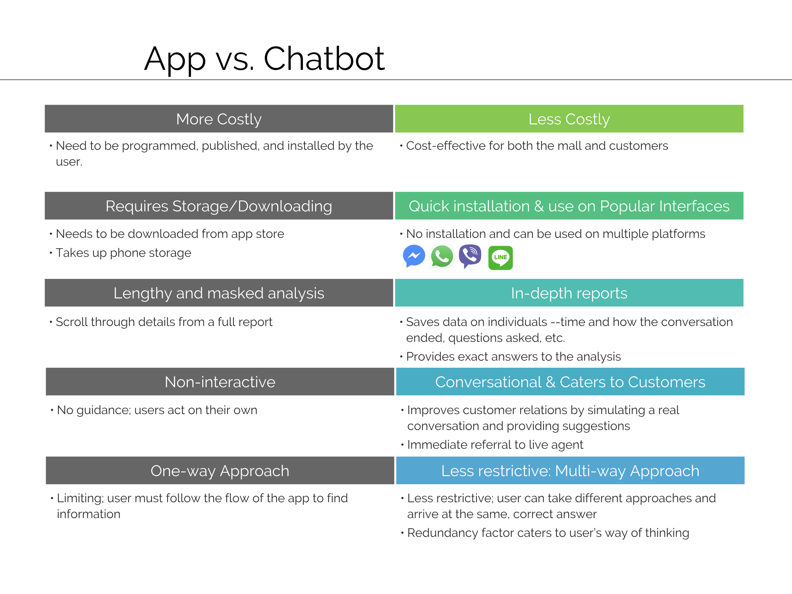
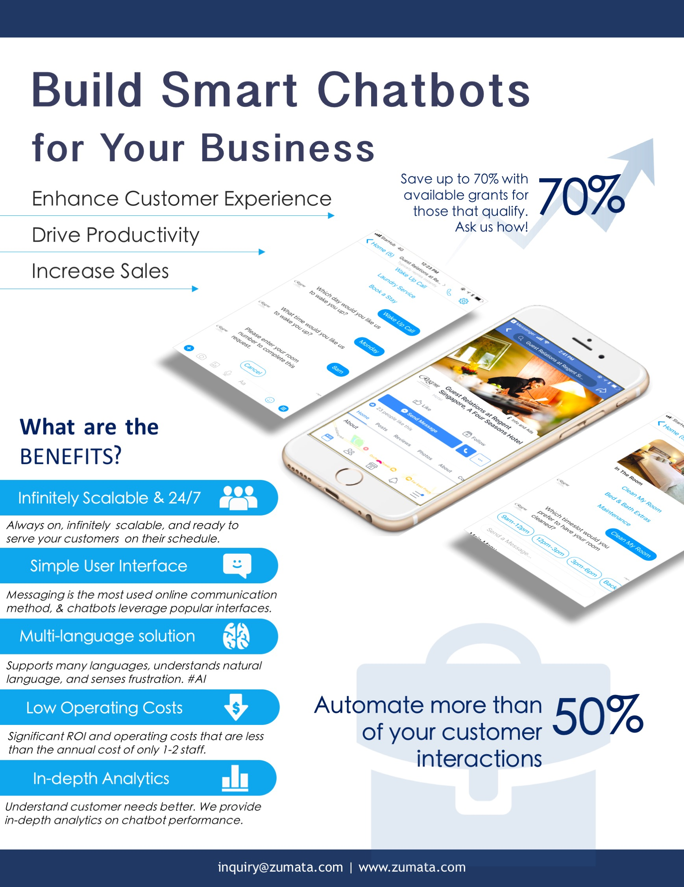
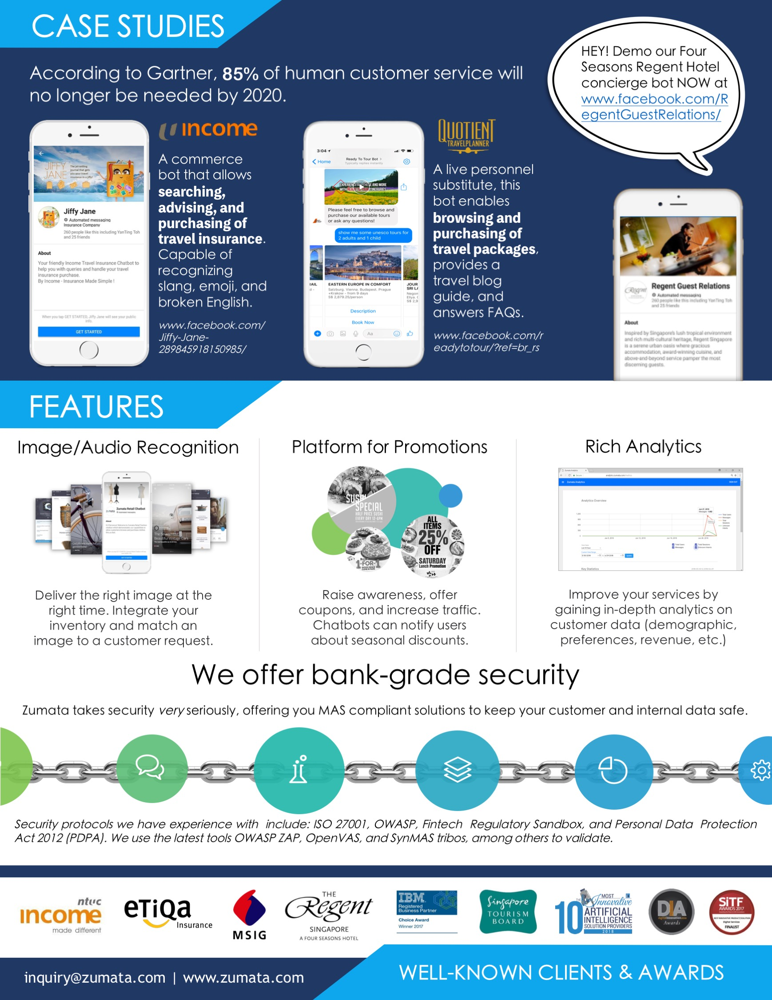

Zumata
Business Development, Marketing
June-August 2018
Over the summer, I interned in Singapore at Zumata, a travel technology startup, where I worked closely with the Chief Operating Officer and two colleagues on marketing and lead generation initiatives. I worked with the team to design, prototype, and pitch a chatbot proposal for a mall client. Additionally, I also helped the startup improve their marketing strategy for the hotel industry by building an email campaign and creating flyers and a proposal deck.
A.I. Chatbot for Mall
—Task—
to AMK Hub to implement a chatbot technology on their website and Facebook Page.
—User Research—
Our team interviewed 3 people, a woman who lived her whole life in Singapore, a University student, and the company CEO an expat from Arizona in order to gain a better understanding of people's needs and how their mall experiences can be improved. I utilized the user interviews to create user personas and guide the chatbot's features.
From our discussion, we highlighted the following pain points:- Parking ticket is tedious to obtain.
- Parking ticket is tedious to obtain.
Iterations
pain points
Solution
Lead Generation & Marketing
—Task—
The long-term marketing objective was to better optimize the lead generation funnel, particularly for clients in the hotel vertical seeking A.I. chatbot products.
—User Research—
Iterations
pain points
Solution
email flyer conference
 